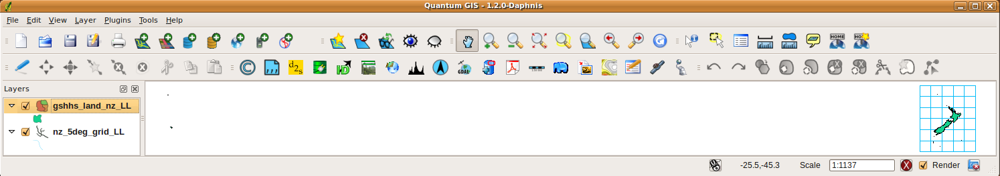
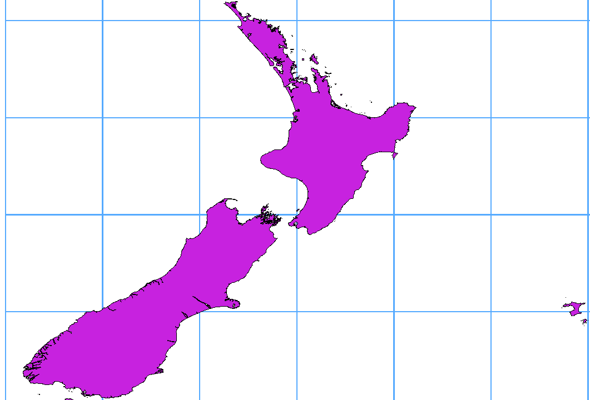

重要
翻訳は あなたが参加できる コミュニティの取り組みです。このページは現在 80.00% 翻訳されています。
11.4. データ形式とフィールドを探究する
11.4.1. ラスタデータ
GISラスタデータは、地表面上、大気中、地下の特徴や現象を表す離散的なセルの行列です。ラスタグリッドの各セルは同じサイズで、セルは通常、長方形（QGIS では常に長方形）です。典型的なラスタデータセットには、航空写真や衛星画像などのリモートセンシングデータ、標高や気温などのモデル化されたデータなどがあります。
ベクタデータとは異なり、ラスタデータは通常、各セルに関連するデータベースレコードを持ちません。これらのデータは、ピクセル解像度とラスタレイヤのコーナーピクセルの X/Y 座標によってジオコーディングされています。これにより、QGISはマップキャンバス上にデータを正確に配置することができます。
GeoPackage形式は、QGISで作業する際にラスタデータを保持するのに便利な形式です。一般的で強力な機能を持つGeoTiff形式も良い選択肢になります。
QGIS makes use of georeference information inside the raster layer (e.g., GeoTiff) or an associated world file to properly display the data.
11.4.2. ベクタデータ
Many of the features and tools available in QGIS work the same, regardless of the vector data source. However, because of the differences in format specifications (GeoPackage, ESRI Shapefile, MapInfo and MicroStation file formats, AutoCAD DXF, PostgreSQL, SpatiaLite, Oracle Spatial, MS SQL Server, SAP HANA Spatial databases and many more), QGIS may handle some of their properties differently. Support is provided by the GDAL vector drivers. This section describes how to work with some of these specifics.
注釈
QGISではポイント（マルチポイント）、ライン（マルチライン）、ポリゴン（マルチポリゴン）、円形ストリング、複合カーブ、カーブポリゴン、マルチカーブ、マルチサーフェスの地物タイプをサポートしており、全ての地物タイプはオプションでZ値やM値を持つことができます。
一部のドライバは円形ストリング、複合カーブ、カーブポリゴン、マルチカーブ、マルチサーフェスの地物タイプなどをサポートしていないことに注意してください。QGISはこれらを変換します。
11.4.2.1. GeoPackage
GeoPackage （GPKG）形式はプラットフォームに依存しない形式で、SQLiteデータベースコンテナとして実装されており、ベクタデータとラスタデータの両方を格納するために使用することができます。この形式はOpen Geospatial Consortium （OGC）によって定義され、2014年に公開されました。
GeoPackageはSQLiteデータベース内に以下のものを格納するために使用できます：
ベクタ 地物
画像のタイルマトリックスセット や ラスタ マップ
属性データ（非空間データ）
拡張情報
QGISバージョン3.8以降では、GeoPackageはQGISのプロジェクトを保存できるようになりました。GeoPackageレイヤはJSONフィールドを持つことができます。
GeoPackageはQGISにおいてベクタデータのデフォルトの形式です。
11.4.2.2. ESRIシェープファイル形式
例えばGeoPackageやSpatiaLiteと比較するといくつかの制限はありますが、ESRIシェープファイル形式は未だに最も使われているベクタファイル形式の一つです。
ESRIシェープファイル形式のデータセットはいくつかのファイルからなります。下記の3つは必須です。
.shpファイルは地物のジオメトリを持ちます。.dbfファイルはdBase形式で属性を保持します。.shxインデックスファイル
ESRIシェープファイル形式のデータセットは、投影法に関する情報を持った .prj 拡張子を持つファイルを含めることもできます。投影法ファイルがあると便利ですが、これは必須ではありません。シェープファイル形式のデータセットには追加のファイルを含めることもできます。詳細については、ESRIの 技術仕様 を参照してください。
GDALでは圧縮されたESRIシェープファイル形式（ shz や shp.zip ）の読み書きをサポートしています。
ESRIシェープファイル形式のデータセットのパフォーマンスを向上させる
ESRIシェープファイル形式のデータセットの描画パフォーマンスを向上するには、空間インデックスを作成します。空間インデックスによってズーム、パン両方の速度が向上します。QGISで使用される空間インデックスは .qix 拡張子を持ちます。
空間インデックスを作成するには、以下の手順で操作します：
ESRIシェープファイル形式のデータセットを読み込む（ ブラウザパネル 参照）
凡例内のレイヤ名をダブルクリックするか、右クリックしてコンテキストメニューから を選択し、 レイヤプロパティ ダイアログを開く
ソース タブで、 空間インデックスの作成 ボタンを押す
.prj ファイルの読み込みに関する問題
.prj ファイルを持ったESRIシェープファイル形式のデータセットを読み込んでもQGISがそのファイルから座標参照系を読み取れない場合は、レイヤの タブで  CRSの選択 ボタンをクリックし、適切な投影法を手動で定義する必要があります。これは、
CRSの選択 ボタンをクリックし、適切な投影法を手動で定義する必要があります。これは、 .prj ファイルが CRS ダイアログで表示されるようなQGISで使用される投影法パラメータを完全には指定していないことが多いためです。
同じ理由で、QGISで新しいESRIシェープファイル形式のデータセットを作成すると、2 つの異なる投影ファイルが作成されます：ESRIソフトウェアと互換性のある、限定された投影パラメータの .prj ファイルと、CRSのすべてのパラメータを指定する .qpj ファイルです。QGISが .qpj ファイルを見つけた時には、これが .prj ファイルの代わりに使用されます。
11.4.2.3. 区切りテキストファイル
区切りテキストファイルは、そのシンプルさと読みやすさから非常に一般的であり広く使われています。データはプレーンテキストエディタで閲覧・編集が可能です。区切りテキストファイルは表形式のデータで、列は決められた文字で区切られ、行は改行で区切られます。通常、最初の行には列名が含まれています。区切りテキストファイルの一般的なタイプは、列がカンマで区切られた CSV（Comma Separated Values）です。区切りテキストファイルは位置情報を含むこともできます（ 区切りテキストファイルへのジオメトリ情報の保存 を参照してください）。
QGISでは、区切りテキストファイルをレイヤや通常のテーブルとして読み込むことができます（ ブラウザパネル や 区切りテキストファイルをインポートする を参照）。まずは、ファイルが以下の条件を満たしていることを確認しましょう。
ファイルにはフィールド名を区切ったヘッダ行が必要です。これはデータの最初の行（理想的にはテキストファイルの最初の行）でなければなりません。
ジオメトリを有効にする場合には、ファイルにはジオメトリを定義するフィールドが含まれている必要があります。これらのフィールドには任意の名前を付けることができます。
（ジオメトリが座標で定義されている場合は）XとYの座標フィールドは数値で指定する必要があります。座標系は重要ではありません。
文字列以外の列を持つCSVファイルがある場合、付随するCSVTファイルを持つことができます（ CSVTファイルを使用したフィールドの書式制御 のセクションを参照してください）。
QGISサンプルデータセット（ サンプルデータのダウンロード のセクション参照）内の標高点データファイル elevp.csv は、有効なテキストファイルの例です。
X;Y;ELEV
-300120;7689960;13
-654360;7562040;52
1640;7512840;3
[...]
このテキストファイルの注意点をいくつか挙げます：
このテキストファイル例では、
;（セミコロン）を区切り文字として使用しています（フィールドの区切りには任意の文字を使用可能です）。最初の行は見出しです。ここには
X、YおよびELEVというフィールドが含まれています。テキストフィールドを区切るための引用符（
"）は使われていません。X座標は
Xフィールドに含まれていますY座標は
Yフィールドに含まれています
区切りテキストファイルへのジオメトリ情報の保存
区切りテキストファイルには、主に2つの形式でジオメトリ情報を含めることができます：
ポイントジオメトリデータの場合は、別々の列に座標（例えば
Xcol、Ycol... ）として含める任意のジオメトリタイプの場合は、単一の列にジオメトリの well-known text (WKT) 表現として含める
曲線ジオメトリ(CircularString, CurvePolygon, CompoundCurve) を持つ地物がサポートされています。以下は、WKTとして符号化されたジオメトリを持った区切りテキストファイルに含まれるジオメトリタイプの例です:
Label;WKT_geom
LineString;LINESTRING(10.0 20.0, 11.0 21.0, 13.0 25.5)
CircularString;CIRCULARSTRING(268 415,227 505,227 406)
CurvePolygon;CURVEPOLYGON(CIRCULARSTRING(1 3, 3 5, 4 7, 7 3, 1 3))
CompoundCurve;COMPOUNDCURVE((5 3, 5 13), CIRCULARSTRING(5 13, 7 15,
9 13), (9 13, 9 3), CIRCULARSTRING(9 3, 7 1, 5 3))
区切りテキストファイルはジオメトリの Z 座標や M 座標もサポートしています:
LINESTRINGZ(10.0 20.0 30.0, 11.0 21.0 31.0, 11.0 22.0 30.0)
CSVTファイルを使用したフィールドの書式制御
CSVファイルを読み込む際GDALドライバは、別の指定がない限り、全てのフィールドを文字列（テキスト）と仮定します。CSVTファイルを作成することで、さまざまな列のデータ型をGDAL（そしてQGIS）に伝えることができます。
データ型 |
名前 |
例 |
|---|---|---|
整数値 |
整数 |
4 |
ブール値 |
Integer(Boolean) |
true |
小数点付き数値 |
Real |
3.456 |
日付 |
Date (YYYY-MM-DD) |
2016-07-28 |
時刻 |
Time (HH:MM:SS+nn) |
18:33:12+00 |
日付と時刻 |
DateTime (YYYY-MM-DD HH:MM:SS+nn) |
2016-07-28 18:33:12+00 |
CoordX |
CoordX |
8.8249 |
CoordY |
CoordY |
47.2274 |
Point(X) |
Point(X) |
8.8249 |
Point(Y) |
Point(Y) |
47.2274 |
WKT |
WKT |
POINT(15 20) |
CSVTファイルは、データ型が引用符で囲まれ、コンマで区切られた 一行 のプレーンテキストファイルです。例えば
"Integer","Real","String"
各列の幅や精度を指定することもできます。例
"Integer(6)","Real(5.5)","String(22)"
このファイルは .csv ファイルと同じフォルダに同じ名前で保存されますが、拡張子は .csvt です。
You can find more information at GDAL CSV Driver.
Tip
フィールド型を検知する
CSVTファイルを使用してデータ型を伝える代わりに、QGISはフィールド型を自動的に検出し、想定されるフィールド型を変更する可能性を提供します。
11.4.2.4. PostgreSQL Database
In order to process geographical information in a PostgreSQL database, the PostGIS extension must first be installed. PostGIS extends the capabilities of the PostgreSQL relational database by adding support for storing, indexing, and querying geospatial data.
To enable PostGIS in your database you have to activate the extension
in your database (open database and run CREATE EXTENSION postgis;).
PostGIS enabled databases are also often named "PostGIS layer".
Using PostGIS, vector functions such as select and identify work more
accurately than they do with GDAL layers in QGIS.
Tip
PostGISレイヤ
通常、PostGISレイヤはgeometry_columnsテーブルのエントリがあることによって識別されます。QGISでは、geometry_columnsテーブルのエントリを持たないレイヤもロードすることができます。これには、テーブルとビューの両方が含まれます。ビューの作成については、PostgreSQLのマニュアルを参照してください。
このセクションでは、QGISがPostgreSQLレイヤにアクセスする方法について、いくつかの詳細を説明します。ほとんどの場合、QGIS は単純にロード可能なデータベーステーブルのリストをユーザーに提供し、要求に応じてテーブルを読み込むだけです。しかし、PostgreSQLのテーブルをQGISに読み込むことができない場合には、以下の情報がQGISのメッセージを理解するための助けとなり、PostgreSQLのテーブルやビュー定義を修正してQGISで読み込めるようになるための方向性が得られるかもしれません。
注釈
PostgreSQLデータベースにもQGISのプロジェクトを保存できます。
主キー
QGISは、PostgreSQLレイヤがユニークなキーとして使用できる列を含んでいることを要求します。テーブルの場合、これは通常、テーブルに主キーまたはユニーク制約を持つ列を必要とすることを意味します。QGISでは、この列は int4型（4バイトサイズの整数）である必要があります。または、ctid 列を主キーとして使用することもできます。テーブルにこれらの項目がない場合、oid 列が代わりに使用されます。列にインデックスが作成されると、パフォーマンスが向上します（PostgreSQLでは主キーが自動的にインデックス化されることに注意してください）。
QGISには、デフォルトで有効になっている idで選択 チェックボックスがあります。このオプションは属性なしのid を取得しますが、多くの場合、これは主キーによる検索よりも高速です。
ビュー
PostgreSQLのレイヤがビューである場合でも同様の要件がありますが、ビューは必ずしも主キーやユニーク制約のある列を持っているとは限りません。ビューをロードする前に、QGISダイアログで主キーフィールド（整数である必要があります）を定義する必要があります。適切な列がビューに存在しない場合、QGISはレイヤをロードしません。このような場合には、適切な列（整数型で、主キーであるかまたはユニーク制約があり、できればインデックス付き）を確実に含むようにビューを変更することが解決策となります。
テーブルに関しては、 idで選択 のチェックボックスがデフォルトで有効になっています（チェックボックスの意味については上記参照）。複雑なビューを使用する場合には、このオプションを無効にした方がよいかもしれません。
注釈
PostgreSQL外部テーブル
PostgreSQL foreign tables are not explicitly supported by the PostgreSQL provider and will be handled like a view.
QGIS layer_style テーブルとデータベースのバックアップ
If you want to make a backup of your PostgreSQL database using the
pg_dump and pg_restore commands, and the default layer
styles as saved by QGIS fail to restore afterwards, you need to set
the XML option to DOCUMENT before the restore command:
layer_styleテーブルのPLAINバックアップを作りますそのファイルをテキストエディタで開きます
SET xmloption = context;の行をSET XML OPTION DOCUMENT;に変えますファイルを保存します
psqlを使ってテーブルを新しいデータベースにリストアします
データベース側でのフィルタ
QGISでは、サーバサイドであらかじめ地物をフィルタリングすることができます。 の  にチェックを入れると、サーバ側でフィルタリングされます。データベースに送信されるのは、サポートされている式のみです。サポートされていない演算子や関数を使用した式は、ローカル側での評価に滑らかにフォールバックします。
にチェックを入れると、サーバ側でフィルタリングされます。データベースに送信されるのは、サポートされている式のみです。サポートされていない演算子や関数を使用した式は、ローカル側での評価に滑らかにフォールバックします。
PostgreSQLのデータ型のサポート
PostgreSQLプロバイダでサポートされているデータ型には、以下のものが含まれます：整数、浮動小数点、論理値、バイナリオブジェクト、可変長文字、幾何データ、 日付/時刻、配列、 hstore（キー/バリュー型）、JSON
PostgreSQLへデータをインポートする
Data can be imported into PostgreSQL using several tools, including the Browser, DB Manager plugin and the command line tools shp2pgsql and ogr2ogr.
DB Manager
QGISには、  DBマネージャ という名前のコアプラグインが付属しています。これはデータをロードするために使用することができ、スキーマもサポートしています。詳細は DBマネージャプラグイン を参照してください。
DBマネージャ という名前のコアプラグインが付属しています。これはデータをロードするために使用することができ、スキーマもサポートしています。詳細は DBマネージャプラグイン を参照してください。
shp2pgsql
PostGISには shp2pgsql というユーティリティコマンドが含まれており、これを使用してシェープファイル形式のデータセットをPostGIS対応のデータベースにインポートすることができます。例えば、 lakes.shp という名前のシェープファイル形式のデータセットを gis_data という名前のPostgreSQLデータベースにインポートするには、次のコマンドを使用します:
shp2pgsql -s 2964 lakes.shp lakes_new | psql gis_data
これにより、 gis_data データベース内に lakes_new という名前の新規レイヤが作成されます。この新しいレイヤは空間参照識別子（SRID）が2964になります。空間参照系と投影法についての詳細は、 投影法の操作 を参照してください。
Tip
Exporting datasets from PostgreSQL
There is also a tool for exporting PostgreSQL datasets with geographic data to Shapefile format: pgsql2shp. It is shipped within your PostGIS distribution.
ogr2ogr
In addition to shp2pgsql and DB Manager, there is another tool for feeding geographical data in PostgreSQL: ogr2ogr. It is part of your GDAL installation.
To import a Shapefile format dataset into PostgreSQL, do the following:
ogr2ogr -f "PostgreSQL" PG:"dbname=postgis host=myhost.de user=postgres
password=topsecret" alaska.shp
This will import the Shapefile format dataset alaska.shp into the
database postgis using the user postgres with the password topsecret
on the host server myhost.de.
Note that GDAL must be built with PostgreSQL.
You can verify this by typing (in  ):
):
ogrinfo --formats | grep -i post
デフォルトの INSERT INTO メソッドの代わりにPostgreSQLの COPY コマンドを使用したい場合には、以下の環境変数を設定します（ と  では利用可能）:
では利用可能）:
export PG_USE_COPY=YES
shp2pgsl は空間インデックスを作成しますが、 ogr2ogr では空間インデックスを作成しません。インポート後に追加のステップとして、通常のSQLコマンド CREATE INDEX を使用して手動でインデックスを作成する必要があります（次のセクション パフォーマンスの改善 で説明します）。
パフォーマンスの改善
Retrieving features from a PostgreSQL database can be time-consuming, especially over a network. You can improve the drawing performance of PostgreSQL layers by ensuring that a spatial index exists on each layer in the database. PostGIS supports creation of a GiST (Generalized Search Tree) index to speed up spatial searching (GiST index information is taken from the PostGIS documentation available at https://postgis.net).
Tip
レイヤのインデックス作成にはDBマネージャを使用することができます。最初にレイヤを選択し、 をクリックして、 タブを開き、 空間インデックスの追加 ボタンを押します。
GiSTインデックスを作成するための構文は以下のとおりです:
CREATE INDEX [indexname] ON [tablename]
USING GIST ( [geometryfield] GIST_GEOMETRY_OPS );
巨大なテーブルでは、インデックスの作成には長時間かかることに注意してください。インデックスが作成されたら、 VACUUM ANALYZE を実行してください。詳細な情報については、PostGISドキュメント（ 文献とWeb参照 のPOSTGIS-PROJECT ）を参照してください。
下記の例では、GiSTインデックスを作成しています:
gsherman@madison:~/current$ psql gis_data
Welcome to psql 8.3.0, the PostgreSQL interactive terminal.
Type: \copyright for distribution terms
\h for help with SQL commands
\? for help with psql commands
\g or terminate with semicolon to execute query
\q to quit
gis_data=# CREATE INDEX sidx_alaska_lakes ON alaska_lakes
gis_data-# USING GIST (geom GIST_GEOMETRY_OPS);
CREATE INDEX
gis_data=# VACUUM ANALYZE alaska_lakes;
VACUUM
gis_data=# \q
gsherman@madison:~/current$
11.4.2.5. SpatiaLiteレイヤ
ベクタレイヤをSpatiaLite形式で保存したい場合には、 既存のレイヤから新しいレイヤを作成する の説明に従ってください。 形式 として SpatiaLite を選択し、 ファイル名 と レイヤ名 を入力してください。
Also, you can select SQLite as format and then add
SPATIALITE=YES in the
field.
This tells GDAL to create a SpatiaLite database.
See also https://gdal.org/en/latest/drivers/vector/sqlite.html.
QGISはSpatiaLiteで編集可能なビューもサポートしています。SpatiaLiteデータの管理には、 DBマネージャ コアプラグインを使用することもできます。
新しいSpatiaLiteレイヤを作成したい場合は 新しいSpatiaLiteレイヤを作成する を参照して下さい。
11.4.2.6. GeoJSONに特有のパラメータ
GeoJSON形式で レイヤをエクスポートする 場合、いくつか特有の レイヤオプション があります。これらのオプションは、ファイルに書き出すGDALのオプションに由来するものです：
COORDINATE_PRECISION 座標を書き込む際の小数点区切り文字以下の最大桁数を指定します。デフォルトは15です（注：緯度経度座標の場合には6で十分です）。末尾に続くゼロは切り捨てられます。
RFC7946 by default GeoJSON 2008 will be used. If set to YES, the updated RFC 7946 standard will be used. Default is NO (thus GeoJSON 2008). See https://gdal.org/en/latest/drivers/vector/geojson.html#rfc-7946-write-support for the main differences, in short: only EPSG:4326 is allowed, other crs's will be transformed, polygons will be written such as to follow the right-hand rule for orientation, values of a "bbox" array are [west, south, east, north], not [minx, miny, maxx, maxy]. Some extension member names are forbidden in FeatureCollection, Feature and Geometry objects, the default coordinate precision is 7 decimal digits
WRITE_BBOX をYESに設定すると、地物や地物コレクションのレベルでジオメトリのバウンディングボックスを含めます。
Besides GeoJSON there is also an option to export to "GeoJSON - Newline Delimited" (see https://gdal.org/en/latest/drivers/vector/geojsonseq.html). Instead of a FeatureCollection with Features, you can stream one type (probably only Features) sequentially separated with newlines.
GeoJSON - Newline Delimited has some specific Layer options available too:
COORDINATE_PRECISION 上記を参照してください（GeoJSONのものと同様です）。
RS レコードの開始を RS=0x1E の文字とするかどうかを決めます。違いは、フィーチャーがどのように区切られるかにあります。 改行（LF）文字のみ（Newline Delimited JSON, geojsonl）か、レコード区切り（RS）文字がレコードの前に置かれて改行文字で区切られるか（GeoJSON Text Sequences, geojsons）です。 デフォルトはNOです。拡張子が指定されない場合は、ファイルに
.json拡張子が付きます。
11.4.2.7. SAP HANA空間レイヤ
このセクションでは、QGISがSAP HANAのレイヤにアクセスする方法について、いくつかの詳細を説明します。ほとんどの場合、QGISは単純にロード可能なデータベーステーブルのリストをユーザーに提供し、要求に応じてテーブルを読み込むだけです。しかし、SAP HANAのテーブルまたはビューをQGISに読み込むことができない場合には、以下の情報が参考となり、根本的な原因を理解し問題解決の助けとなるでしょう。
地物の識別
QGISの地物編集機能の全てを利用したい場合には、QGISがレイヤ内の各地物を明確に識別できる必要があります。内部的には、QGISは地物の識別に64ビットの符号付き整数を使用します。負の値の範囲は特別な目的のために予約されています。
従って、QGISの地物編集機能を完全にサポートするためには、SAP HANAプロバイダには64ビットの正の整数にマッピングできるユニークキーが必要です。もしもこのようなマッピングを作成できない場合には、地物を表示することはできますが、編集できない可能性があります。
テーブルの追加
レイヤとしてテーブルを追加する際に、SAP HANAプロバイダはテーブルの主キーを使用して、主キーをユニークな地物IDにマッピングします。 従って、地物編集機能を完全にサポートするためには、テーブルの定義に主キーが必要です。
SAP HANAプロバイダはマルチカラムの主キーをサポートしていますが、ベストな性能を得たい場合には、主キーは INTEGER 型の単一カラムとしてください。
ビューの追加
レイヤとしてビューを追加する際に、SAP HANAプロバイダは地物を一義的に特定するカラムを自動的に特定することはありません。さらに、一部のビューは読み取り専用で、編集できません。
地物編集機能を完全にサポートするためには、ビューは更新可能である必要があり（システムビュー SYS.VIEWS において、問題となっているビューのカラムの IS_READ_ONLY を確認してください）、地物を識別するための一つ以上のカラムをQGISで手動で指定する必要があります。このカラムは、 を使用して、 地物ID カラムで選択することで指定できます。ベストな性能を得たい場合には、 地物ID の値は単一の INTEGER 型のカラムとしてください。
11.4.2.8. Field domain
Field domains are rules that define acceptable values for a field in a database table. This is applicable when working with data sources that support field domains, such as GeoPackage and ESRI File Geodatabase. Field domains can be managed from the contextual menu of a field in the Browser panel. The following types are available:
New Range Domain...: creates a new domain to restrict field values to a specified numeric range.
New Coded Values Domain...: creates a new domain to restrict field values to a predefined list of acceptable values.
New Glob Domain...: creates a new domain to restrict field values to matching a regular expression pattern.
When creating a field domain, following options are provided in the dialog:
Name: set the name of the new field domain.
Description: provide a description for the new field domain.
Field type: select the data type of the field domain (e.g., Boolean, Text, Integer, Decimal).
Additional Policies, only available for ESRI File Geodatabase format:
Split policy
Merge policy
Under Range, you can set the following options:
Minimum: set the minimum acceptable value for the field.
Maximum: set the maximum acceptable value for the field.
Check the
Inclusive if you want to include the boundary values in the acceptable range.
Values: click the
 Add row or
Add row or  Remove row to manage
the list of acceptable values for the field.
Remove row to manage
the list of acceptable values for the field.Pattern: define the Glob pattern using wildcard characters.
{kind=link}
11.4.3. 経度 180° をまたぐレイヤ
多くのGISパッケージは、地理参照系（緯度経度）が180度の経線を越えるレイヤをラップしません。その結果、このようなレイヤをQGISで開くと、近くに表示されるはずの2つの場所が大きく離れて表示されることがあります。図 11.42 では、マップキャンバスの左端にある小さな点（チャタム諸島）は、ニュージーランド本島の右側のグリッド内にあるはずです。

図 11.42 180° 経線をまたぐ緯度経度による地図
11.4.3.1. Solving in PostgreSQL
A work-around is to transform the longitude values using PostgreSQL and the ST_ShiftLongitude function. This function reads every point/vertex in every component of every feature in a geometry, and shifts its longitude coordinate from -180..0° to 180..360° and vice versa if between these ranges. This function is symmetrical so the result is a 0..360° representation of a -180..180° data and a -180..180° representation of a 0..360° data.
{kind=link}

図 11.43 ST_ShiftLongitude 関数を適用した経度180°越え
Import data into PostgreSQL (PostgreSQLへデータをインポートする) using, for example, the DB Manager plugin.
Use the PostgreSQL command line interface to issue the following command:
-- In this example, "TABLE" is the actual name of your PostgreSQL table update TABLE set geom=ST_ShiftLongitude(geom);
すべてうまくいくと、更新された地物の数についての確認が表示されます。その後、地図を読み込むと違いを確認できます（ Figure_vector_crossing_map ）。